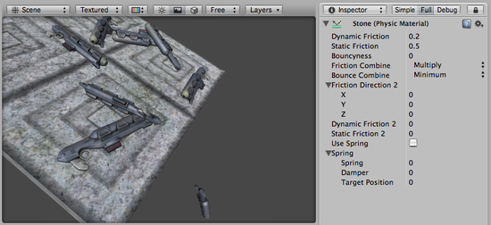

Physic Material
The Physic Material is used to adjust friction and bouncing effects of colliding objects.
To create a Physic Material select from the menu bar. Then drag the Physic Material from the Project View onto a Collider in the scene.

The Physic Material Inspector
The Physic Material Inspector
Properties
| Dynamic Friction | The friction used when already moving. Usually a value from 0 to 1. A value of zero feels like ice, a value of 1 will make it come to rest very quickly unless a lot of force or gravity pushes the object. |
| Static Friction | The friction used when an object is laying still on a surface. Usually a value from 0 to 1. A value of zero feels like ice, a value of 1 will make it very hard to get the object moving. |
| Bouncyness | How bouncy is the surface? A value of 0 will not bounce. A value of 1 will bounce without any loss of energy. |
| Friction Combine Mode | How the friction of two colliding objects is combined. |
| Average | The two friction values are averaged. |
| Min | The smallest of the two values is used. |
| Max | The largest of the two values is used. |
| Multiply | The friction values are multiplied with each other. |
| Bounce Combine | How the bouncyness of two colliding objects is combined. It has the same modes as Friction Combine Mode |
| Friction Direction 2 | The direction of anisotropy. Anisotropic friction is enabled if this direction is not zero. Dynamic Friction 2 and Static Friction 2 will be applied along Friction Direction 2. |
| Dynamic Friction 2 | If anisotropic friction is enabled, DynamicFriction2 will be applied along Friction Direction 2. |
| Static Friction 2 | If anisotropic friction is enabled, StaticFriction2 will be applied along Friction Direction 2. |
| Use Spring | If enabled, the surface will be springy. |
| Spring | The spring properties of the surface |
| Spring | The spring coefficient. A high value will pull the surfaces towards the rest position faster. |
| Damper | The damper coefficient. A high value will dampen the relative movement of the two surfaces. |
| Target Position | The rest position of the spring. |
Details
Friction is the quantity which prevents surfaces from sliding off each other. This value is critical when trying to stack objects. Friction comes in two forms, dynamic and static. Static friction is used when the object is lying still. It will prevent the object from starting to move. If a large enough force is applied to the object it will start moving. At this point Dynamic Friction will come into play. Dynamic Friction will now attempt to slow down the object while in contact with another.
Hints
- Don't try to use a standard physic material for the main character. Make a customized one and get it perfect.